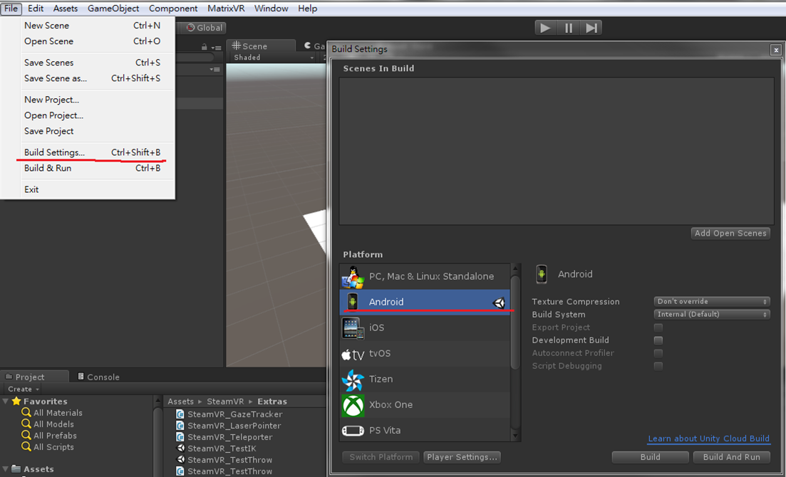

Getting Started¶
In this section, you will learn how to build your first Wave VR application “HelloVR”.
- There are two ways to build a Wave VR application:
- 
- Use the Android IDE called Android Studio. (See section Building with Android Studio for details.)
- Use the Android build tool called Gradle. (See section Building with Gradle for details.)
Before building a Wave VR application, you must
- Prepare your build environment (section Prerequisites)
- Download the Wave VR SDK (section Downloading the SDK)
- Copy the required library and header files to the specified location of your local project and then start your build (section Building the Sample APK)
注解
The SDK API documentation is available in SDK/reference.
Contents |
Prerequisites¶
This section introduces how to set up the build environment for Windows 7, 8 and 10, Ubuntu 14.04 or above and MAC OS X .
Linux¶
- Prerequisite for Linux
Windows¶
- Prerequisite for Windows 7, 8 and 10
MAC OS¶
- Prerequisite for MAC OS X
Downloading the SDK¶
| ToDo: will be provided in future. |
SDK Folder Layout:
- app : WAVE VR native sample apk.
- device : WAVE VR device service apk.
- docs : WAVE VR documentation.
- libs: WAVE VR SDK client and pluginkit library.
- samples : WAVE VR native sample source.
- services: WAVE VR server and service apk.
- tools : WAVE VR tool apk.
- plugin:
- unity: WAVE VR unity plugin and sample.
- unreal: WAVE VR unreal plugin and sample.
For detailed information, please refer to SDK/README.md
Building the Sample APK¶
This section describes how to build a Wave VR application.
Building with Android Studio¶
Android Studio is available for Windows, Mac OS, and Linux.
- Use Android Studio to open the sample project. You will find the sample project in
SDK/samples/wvr_hellovr. - In File -> Project Structure, set up the NDK and SDK path.
- Click Build -> Make Project.
- Click Build -> Build APK. You can get the
app-debug.apkfromSDK/samples/wvr_hellovr/app/build/outputs/apk.
Building with Gradle¶
You can also execute all the build tasks available in Android project using the Gradle command line tool.
- Build command can be found in Build apk with Gradle Command
Installing the Required VR Services¶
To run the Wave VR application, you will need to install two APKs that contain services that run in the background while your VR app is running.
VR Server APK¶
This APK contains a service that will be started when a VR app exists in foreground. You can get the APK here: SDK/services/wavevr_server.apk. The main tasks are:
- To set up a connection between the VR app and the DeviceService that is used to obtain input and tracking data.
- To send Events to the VR app that indicate the state of the VR hardware.
- To detect the lifecycle of the VR app and manage the start and stop of the VR hardware.
注解
- You must install VR Server (wavevr_server.apk) first, before installing any VR DeviceService or VR App.
VR OEMService APK¶
This APK contains a service that will be started when VR Server starts. You can get the APK here: SDK/services/oemservice-release.apk. The main tasks are:
- To check the environment of Wave VR and inform VR Server the result.
- To get information from VR Server and do some actions to it.
注解
- You need to install VR OEMService (oemservice-release.apk) to make sure the operation of Wave VR correctly.
VR DeviceService APK¶
This APK contains a service that connects the plugged-in VR hardware, such as an HMD or controller. You can get the APK here: SDK/tools/wvr_mobileHMD.apk. The main tasks are:
- To send the pose, button, or analog data to VR apps.
- To send device info to VR apps (such as hardware version, battery status, etc).
After installing the services, you will be able to run the sample VR app on your Android device.
注解
If you use the other dev kit, please install DeviceService(HMD and Controller) which is specific for your dev kit.
Testing a VR Application¶
The Wave VR SDK also comes with hardware emulators that make it possible to test your Wave VR application without requiring physical hardware. There are two application you can use: the HMD device(use phone sensor) and the controller emulator. Each application requires an Android device to run on. If you want to use both application, you will need to have two Android devices that have Bluetooth.
注解
This testing environment is using android phone to be an emulator. The Wave VR SDK provide a HMD DeviceService(SDK/tools/wvr_mobileHMD.apk) and Controller DeviceService(SDK/tools/wvr_controller_emu_host.apk and wvr_controller_emu_remote.apk) for tracking emulator on Android phone.
Installing the Hardware application¶
You will need to prepare two Android devices. One will be used to HMD device(use phone sensor). The other will be used to emulate the controller. Both controllers will need to have Bluetooth turned on. You will need to pair the Android devices before testing your Wave VR application.
Selecting Device¶
- If you install new device service to phone, please install setting app (SDK/app/wavevr_settings-release.apk) to choose and enable the new DeviceService that you install.
注解
After install wavevr_settings-release.apk and wvr_mobileHMD.apk finished, using setting app to choose Phone Device to be HMD DeviceService.
Controller Emulator¶
- Install
Prepare TWO Android phones, one is as headset phone, another one is as controller phone.
- Enable Bluetooth on both phones.
Select Settings > Bluetooth, and turn on Bluetooth.
- Pair your headset phone to controller phone via Bluetooth.
On both phones, go to Settings > Bluetooth.
On the headset phone, tap the controller phone’s name on the list of devices.
This will show a dialog box on both devices to confirm the pairing.
Confirm the pairing, then return to the home screen on both devices.
- Install SDK/tools/wvr_mobileHMD.apk on headset phone.
wvr_mobileHMD.apk is a HMD tracking emulator.
- Install SDK/tools/wvr_controller_emu_host.apk on headset phone and launch it.
wvr_controller_emu_host.apk is controller emulator driver which used to connect to controller emulator of controller phone.
- Install SDK/tools/wvr_controller_emu_remote.apk on controller phone and launch it.
wvr_controller_emu_remote.apk is controller emulator with controller UI.
- On the headset phone, has 3 slots to connect to the controller phone.
- tap the connect button for the controller slot you want to use.

- A dialog will be displayed to select a controller.

After successfully connecting, the HMD emulator will show “Connect to {Device}” on the controller slot’s title.

- Usage of Controller Emulator
Controller Emulator UI contains below elements.

Double-tapping the virtual trackpad (large circle) area triggers the pressed event of trackpad.
Tapping the menu button (small circle with 3 bars) triggers the pressed event of the menu button and should cause the menu with the application to appear.
Tapping the system button (small circle with 2 arrows) should never triggers the pressed event of the system button because the system button is reserved.